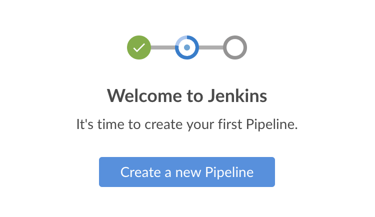

Blue Ocean 入门
本节将介绍如何开始使用BlueOcean。介绍如何 安装和配置Blue Ocean ， 进入Blue Ocean UI 和 返回 Jenkins 经典 UI.
安装 Blue Ocean
Blue Ocean 可以用以下方式安装：
-
作为 已有Jenkins实例上的一组插件
-
Jenkins-Docker镜像的一部分
在已有Jenkins实例上安装
在大多数平台安装Jenkins时，默认情况下不安装 Blue Ocean 插件 及其所有其他依赖插件（组成Blue Ocean“插件套件”）。
要在现有的Jenkins实例上安装Blue Ocean插件套件，您的Jenkins实例必须运行Jenkins 2.7.x或更高版本。
任何拥有 Administer 权限（通过 基于Matrix 安全设置）的Jenkins用户都可以在Jenkins实例上安装插件 。 拥有次权限的Jenkins用户还可以配置系统上其他用户的权限。在 管理安全性 的 授权 部分了解更多信息
要将Blue Ocean安装到您的Jenkins实例：
-
如果需要，请确保您已经登录到jenkins(作为具有 管理员 权限的用户).
-
从Jenkins主页（即Jenkins经典用户界面的仪表板），单机左侧的 管理Jenkins ，然后单击中心的 管理插件 。
-
点击 可用的 选项卡，然后在 过滤 文本框键入
blue ocean，将过两次插件列表为名称/描述包含“blue”和“ocean”的插件名单。
-
选择 安装 列顶部附近的 Blue Ocean 插件复选框，然后单击 立刻下载并在重启后安装 按钮（推荐）或 安装而不重新启动按钮 ，
注意：-
无需选择此过滤列表中其他插件的复选框，因为 Blue Ocean 插件具有其他插件的依赖关系（构成Blue Ocean的插件套件），当您点击安装， 其他插件将被自动选择和安装。
-
如果你选择 安装不重启 按钮, 你可能需要重启Jenkins来获取Blue Ocean的完整功能。
-
阅读 管理 插件 页面中有关如何安装和管理插件的更多信息 。
Blue Ocean 在安装后不需要额外的配置，现有的pipeline 和其他项目（如自由风格作业）将照常运行。
但是，请注意， 首次使用特定的 Git 服务（即GitHub，Bitbucket或普通Git服务器）在 Blue Ocean中创建pipeline 时，Blue Ocean会提示您输入credentials 以访问Git服务器上的存储库。在Blue Ocean可以将 ``Jenkinsfile`` 写入存储库之前
作为Jenkins-Docker镜像的一部分
Blue Ocean套件也与Jenkins捆绑在一起，作为Jenkins Docker镜像
(jenkinsci/blueocean)的一部分，该镜像可以从 Docker Hub 存储库获得。
参阅 安装 Jenkins 页面的 Docker 部分获取更多信息
访问 Blue Ocean
一旦Jenkins环境安装了Blue Ocean，登录到Jenkins经典UI 后，您可以通过点击左侧的 打开Blue Ocean 来访问Blue Ocean页面。

或者，您可以在您的Jenkins url后面追加 /blue 直接访问Blue Ocean - 如 http://jenkins-server-url/blue.
如果您的Jenkins实例：
-
已经存在pipeline或其他项目，则显示 Blue Ocean 仪表板。
-
是新的或者没有配置项目，则Blue Ocean 会显示 Welcome to Jenkins 对话框，其中包含了 Create a new Pipeline 按钮。您可以使用 该按钮开始创建新的pipeline 项目。参阅 创建 Pipeline获取更多信息
Welcome to Jenkins - Create a New Pipeline message box" width="50%">
导航栏
Blue Ocean 用户界面顶部有一个导航栏，可以让您访问Blue Ocean 的不同视图和其他功能。
导航栏分为两部分 - 占据了Blue Ocean视图顶部大部分的公共部分和下面的上下文相关部分。上下文部分取决于您正在查看的Blue Ocean界面。
导航栏的公共部分包含以下按钮：
-
Jenkins 图标 - 点击返回 Dashboard，如果您正在该页面，则重新加载。
-
Pipelines - 也会将您带到仪表板，如果您已经在查看仪表板，则不会执行任何操作。 当您查看 Pipeline 运行细节 页面时，此按钮有不同的用途。
-
Administration - 点击进入经典UI的 管理Jenkins 页面
注意: 如果您的Jenkins用户没有 Administer 权限 (通过 基于Matrix安全性设置). 参阅 管理 安全性 的 授权 部分获取更多信息 -
Go to classic 图标 - 点击返回经典Jenkins界面。 参阅 切换到经典界面获取更多信息
-
Logout - 注销当前Jenkins用户并返回Jenkins登录界面
使用标准导航栏的视图会在其下方添加另一栏，并带有该视图特定的选项。一些视图将普通的导航栏替换为特别适合该视图的导航栏。
切换到经典界面
Blue Ocean 不支持一些用户需要的Jenkins遗留或管理的功能。
如果您需要放弃Blue Ocean用户体验来访问这些功能，请单击Blue Ocean navigation bar公共部分顶部的 *转到经典*图标。
点击此按钮即可进入Jenkins经典用户界面的等效界面，或者Blue Ocean中与经典界面最相似的界面